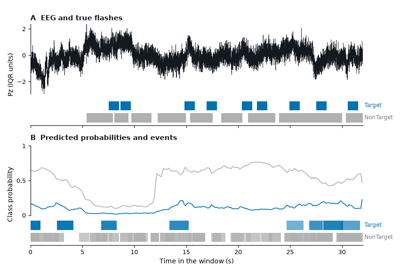

braindecode.models.DANCE#
- class braindecode.models.DANCE(n_outputs=None, n_chans=None, chs_info=None, n_times=None, input_window_seconds=None, sfreq=None, *, n_queries=100, use_channel_merger=True, n_virtual_channels=270, fourier_emb_dim=2048, merger_drop_prob=0.2, embed_dim=128, conv_hidden=512, conv_depth=10, conv_kernel_size=9, conv_dilation_growth=2.5, conv_initial_linear=256, conv_initial_depth=1, conv_drop_prob=0.2, num_latents=256, perceiver_depth=6, cross_attn_heads=2, latent_attn_heads=2, cross_dim_head=64, latent_dim_head=64, max_freq=10.0, num_freq_bands=6, decoder_dim=256, decoder_depth=4, decoder_heads=4, activation=<class 'torch.nn.modules.activation.GELU'>, drop_prob=0.1)[source]#
DANCE from Lévy et al (2026) [dance].
Convolution Attention/Transformer Channel
DANCE frames EEG decoding as event set prediction: a long, unaligned window is mapped to a set of events
(t_start, t_end, class)with normalized[0, 1]spans – DETR [detr2020] for 1-D EEG.Architecture Overview
ChannelMerger(spatial Fourier attention over electrode positions, from [defossez2023]) ->SimpleConv(dilated conv stack) ->Perceiver[perceiver2021] (cross-attention to a fixed 256-latent grid) -> a dense head (forwardoutput) and a DETR cross-attention decoder (detectoutput).Macro Components
DANCE.conv.merger(Spatial ChannelMerger)Operations.
ChannelMergerFourier-embeds each electrode’s(x, y)position (FourierEmb) and computesn_virtual_channelssoftmax-attention combinations of the input channels, mapping(B, n_chans, T) -> (B, n_virtual_channels, T). Nested insideself.conv(matching upstream); disabled (None) whenchs_infohas no usable locations. Controlled bymerger_drop_prob. Role. Makes the model montage-agnostic by projecting any electrode layout onto a fixed virtual-channel basis.DANCE.conv(SimpleConv dilated front-end)Operations.
SimpleConvruns the nested merger, the1x1input projections, thenconv_depthsuccessive dilated convolutions with ReLU between blocks. Dilation starts at one and grows byconv_dilation_growthper block, with the integer part used for each convolution. The front end returns(B, embed_dim, T). Role. Builds the temporal feature representation (Défossez lineage).DANCE.perceiver(Perceiver bottleneck)Operations.
PerceiverFourier-encodes the time axis, then cross-attends a fixednum_latents-token learnable grid to the conv features overperceiver_depthblocks, mapping(B, T, embed_dim) -> (B, num_latents, embed_dim). Role. Makes the model length-agnostic (anyT->num_latentstokens) and forms the detection time-grid (num_latents / durationtokens/s).DANCE.decoder(DETR cross-attention decoder)Operations.
DanceDetrDecoderprojects the latents todecoder_dim, thendecoder_depthself-/cross-attention layers updaten_querieslearnable event queries; per-query heads emit class logits and sigmoidstart/endspans. Used only bydetect()(notforward()). Role. Produces the event-set prediction{class, start, end}.DANCE.final_layer(dense per-token head)Operations.
nn.Linear(embed_dim, n_outputs)applied to every latent token, mapping(B, num_latents, embed_dim) -> (B, num_latents, n_outputs). Role. Theforward()output (dense per-token class logits) and thedenseterm consumed by the consistency loss.
Temporal, Spatial, and Spectral Encoding
Temporal context comes from the dilated conv stack; spatial structure from the Fourier-position channel merge; the Perceiver fourier-encodes the time axis before cross-attention.
Additional Mechanisms
The DETR decoder uses learnable event queries and emits per-query class logits plus sigmoid start/end spans. The dense head provides per-token class logits used as
forward’s output and for the consistency loss.Added in version 1.6.1.
- Parameters:
n_outputs (int) – Number of outputs of the model. This is the number of classes in the case of classification.
n_chans (int) – Number of EEG channels.
chs_info (list of dict) – Information about each individual EEG channel. This should be filled with
info["chs"]. Refer tomne.Infofor more details.n_times (int) – Number of time samples of the input window.
input_window_seconds (float) – Length of the input window in seconds.
sfreq (float) – Sampling frequency of the EEG recordings.
n_queries (
int) – Number of learnable event queries. The default is100.use_channel_merger (
bool) – Enable the spatial Fourier ChannelMerger. Auto-disabled ifchs_infohas no usable electrode locations. The default isTrue.n_virtual_channels (
int) – Merger output channels. The default is270.fourier_emb_dim (
int) – Fourier position embedding dim. The default is2048.merger_drop_prob (
float) – Spatial dropout of the ChannelMerger ONLY (self.conv.merger); bans whole channels within a random radius during training. The default is0.2.embed_dim (
int) – Conv/Perceiver feature dim. The default is128.conv_hidden (
int) – SimpleConv hidden width. The default is512.conv_depth (
int) – Number of dilated conv blocks. The default is10.conv_kernel_size (
int) – Conv kernel size. The default is9.conv_dilation_growth (
float) – Per-block dilation growth. The default is2.5.conv_initial_linear (
int) – 1x1 projection width. The default is256.conv_initial_depth (
int) – Number of 1x1 projections. The default is1.conv_drop_prob (
float) – Accepted for compatibility with saved configurations. The convolution blocks ignore this value. The default is0.2.num_latents (
int) – Perceiver latent count (detection token grid). The default is256.perceiver_depth (
int) – Perceiver cross-attn blocks. The default is6.cross_attn_heads (
int) – Perceiver cross-attn heads. The default is2.latent_attn_heads (
int) – Perceiver self-attn heads. The default is2.cross_dim_head (
int) – Perceiver cross-attn head dim. The default is64.latent_dim_head (
int) – Perceiver self-attn head dim. The default is64.max_freq (
float) – Perceiver fourier max frequency. The default is10.0.num_freq_bands (
int) – Perceiver fourier bands. The default is6.decoder_dim (
int) – DETR decoder dim. The default is256.decoder_depth (
int) – DETR decoder layers. The default is4.decoder_heads (
int) – DETR decoder heads. The default is4.activation (
type[Module]) – Accepted for compatibility with saved configurations. DANCE uses ReLU in its convolutions and GEGLU in the decoder feed-forward layers for every value of this parameter. The default isnn.GELU.drop_prob (
float) – Dropout applied to the raw input (self.input_drop) and inside the DETR decoder (self.decoder).merger_drop_probcontrols the virtual-channel dropout separately. The default is0.1.
- Raises:
ValueError – If some input signal-related parameters are not specified: and can not be inferred.
Notes
If some input signal-related parameters are not specified, there will be an attempt to infer them from the other parameters.
References
[dance]Lévy, Banville, Rapin, King, Moreau, d’Ascoli (2026). DANCE: Detect and Classify Events in EEG. arXiv:2605.10688.
[defossez2023]Défossez et al. (2023). Decoding speech from non-invasive brain recordings.
[perceiver2021]Jaegle et al. (2021). Perceiver: General perception with iterative attention.
[detr2020]Carion et al. (2020). End-to-end object detection with transformers.
Hugging Face Hub integration
When the optional
huggingface_hubpackage is installed, all models automatically gain the ability to be pushed to and loaded from the Hugging Face Hub. Install with:pip install braindecode[hub]
Pushing a model to the Hub:
from braindecode.models import DANCE # Train your model model = DANCE(n_chans=22, n_outputs=4, n_times=1000) # ... training code ... # Push to the Hub; ``datasets`` and ``base_model`` go to the card model.push_to_hub( repo_id="username/my-dance-model", commit_message="Initial model upload", model_card_kwargs={"datasets": ["BNCI2014_001"]}, )
Loading a model from the Hub:
from braindecode.models import DANCE # Load pretrained model model = DANCE.from_pretrained("username/my-dance-model") # Data the weights were trained on, from the Hub model card print(model.card_data.datasets if model.card_data else None) # Load with a different number of outputs (head is rebuilt automatically) model = DANCE.from_pretrained("username/my-dance-model", n_outputs=4)
Extracting features and replacing the head:
import torch x = torch.randn(1, model.n_chans, model.n_times) # Extract encoder features (consistent dict across all models) out = model(x, return_features=True) features = out["features"] # Replace the classification head model.reset_head(n_outputs=10)
Saving and restoring full configuration:
import json config = model.get_config() # all __init__ params with open("config.json", "w") as f: json.dump(config, f) model2 = DANCE.from_config(config) # reconstruct (no weights)
All model parameters (both EEG-specific and model-specific such as dropout rates, activation functions, number of filters) are automatically saved to the Hub and restored when loading.
See Loading and Adapting Pretrained Foundation Models for a complete tutorial.
Methods
- forward(x)[source]#
Define the computation performed at every call.
Should be overridden by all subclasses.
Note
Although the recipe for forward pass needs to be defined within this function, one should call the
Moduleinstance afterwards instead of this since the former takes care of running the registered hooks while the latter silently ignores them.
Examples using braindecode.models.DANCE#

From window labels to events: asynchronous EEG decoding with DANCE